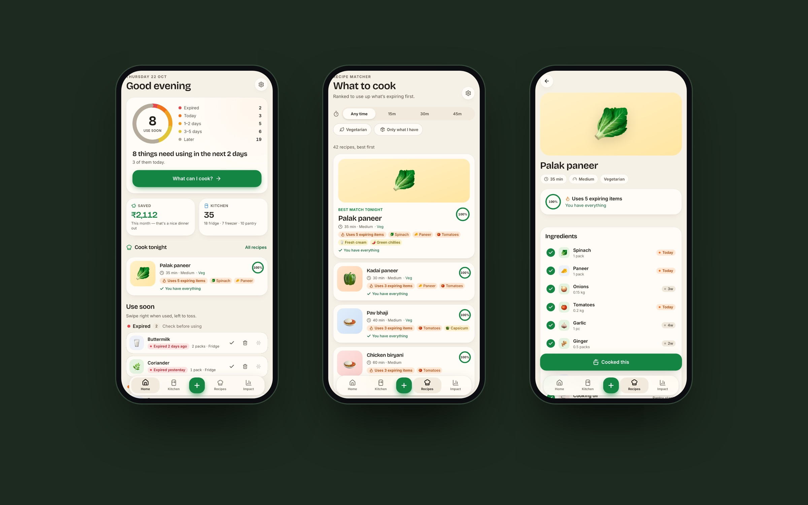
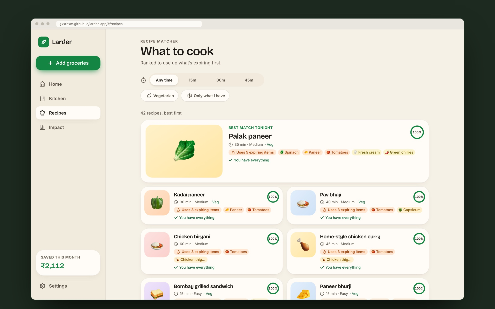
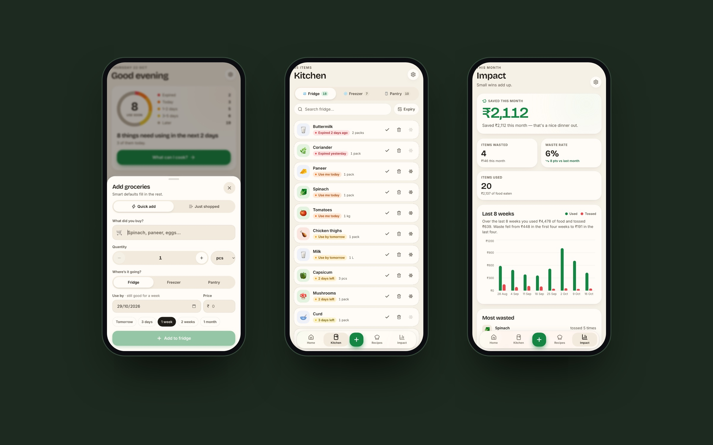
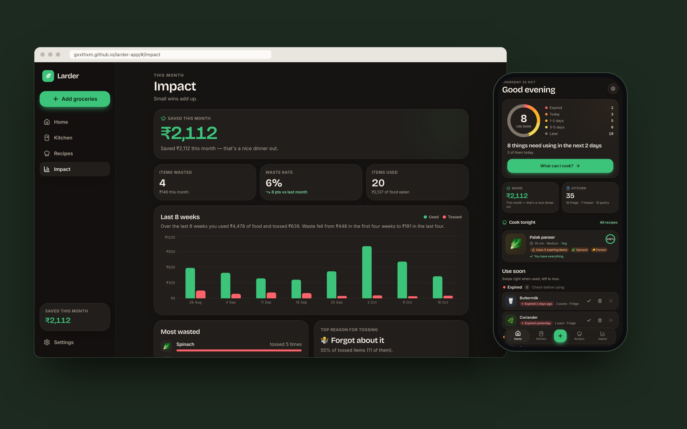

Larder is a kitchen inventory app that tells you what’s about to go bad, and what you can cook with it tonight. I wrote the product brief, then designed and built it with Claude Code as a mobile-first web app that installs on a phone and works offline.
Problem Statement
Households throw away a large share of the food they buy, mostly because they forget what’s in the fridge until it’s too late. Grocery lists and recipe apps exist, but none of them connect what I have to what’s expiring to what I should cook.
The core insight is that expiry is the forcing function. Instead of a static list, Larder ranks everything by urgency and turns the most urgent items into a meal suggestion, so one screen answers: what should I use up first, and how?
Goals
- Add a grocery item in under 10 seconds, with smart default shelf life by item type.
- Show everything ranked by days left, in clear urgency bands.
- Suggest recipes that use the most urgent items first, within two taps of Home.
- Let people mark items used, partly used or thrown away, and see money and food saved over time.
From Fridge to Dinner

- Use Soon: Home leads with a ring of everything that needs using, grouped into Expired, Today, 1–2 days, 3–5 days and Later, and a headline: “8 things need using in the next 2 days.”
- Recipe matcher: 42 bundled recipes, from palak paneer and dal tadka to frittata and pasta, ranked by how many urgent items they use. Each card shows “Uses 5 expiring items” and whether anything is missing.
- Cooked this: one tap consumes the recipe’s ingredients, the items leave the list and the savings tick up. Clearing three or more urgent items the first time earns a small burst of confetti.
- Use up and toss: swipe right for Used and left for Toss, with buttons for both. Partial quantities use a stepper, tossing asks a one-tap reason, and every action can be undone.
The Scoring Rule

Ranking is a simple, transparent rule rather than a black box, so the suggestions always make sense:
- Each required ingredient you have scores +10 if it expires within 2 days, +5 within 3–5 days and +1 otherwise.
- Each missing required ingredient scores −6; optional ingredients never count against a recipe, and salt, oil, pepper and water are always assumed.
- Ties break on fewest missing, then fewest minutes. Filters cover time, vegetarian and “only what I have”, with closest matches shown if nothing fits.
Adding and Tracking

- Quick add: type a name and a catalogue of 158 common items fills in the emoji, location, shelf life, unit and price, all editable.
- Just shopped: paste a list like “2 milk, spinach, 6 eggs, 500g paneer” and it becomes rows to review and add in one go.
- Kitchen: Fridge, Freezer and Pantry tabs with search and sorting. Moving something to the freezer extends its expiry automatically.
- Impact: money saved this month, items wasted, waste rate, an 8-week used vs tossed chart, the most wasted items and the top reason for tossing.
Design Direction

- A friendly kitchen companion: cream background, warm charcoal in dark mode, and a fresh green accent. Soft rounded cards, big numerals, ring gauges and springy interactions take their cue from the Bevel iOS app.
- Urgency you can read at a glance: a dedicated scale from red to orange, amber, yellow and neutral, always paired with a text label so colour is never the only signal.
- Lists that scan like a shelf: every item has a large emoji on a tinted tile.
- Cheerful, never guilt-tripping: “Use me today”, “Saved ₹2,112 this month — that’s a nice dinner out”, and when something is tossed, simply “Logged. Happens to everyone.”
Building It
I wrote the brief (problem, users, success criteria, data model, scoring rule and design direction), then built the app with Claude Code from it.
- React and TypeScript with Vite, Tailwind CSS, accessible Radix-based components, Zustand for state, Framer Motion for gestures and Recharts for the chart.
- Frontend only: data stays on the device, and the catalogue and recipes ship with the app. It installs as a PWA and works with no network.
- The urgency maths, scoring rule, list parser and impact numbers are pure functions with unit tests.
- A sample Indian-urban kitchen of 35 items and 8 weeks of history, dated relative to today, so the demo always has something to use up.
Outcome & Learnings
- Connecting inventory to recipes is the whole product. Either one alone is a list; together they answer tonight’s question.
- A transparent scoring rule builds more trust than clever ranking: people can see why palak paneer comes first.
- Tone matters in a waste tracker. Neutral, encouraging copy keeps people logging instead of feeling judged.